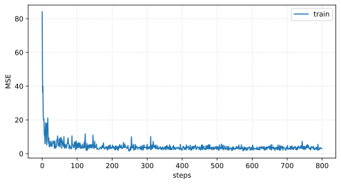
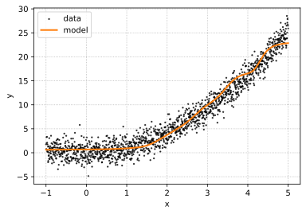
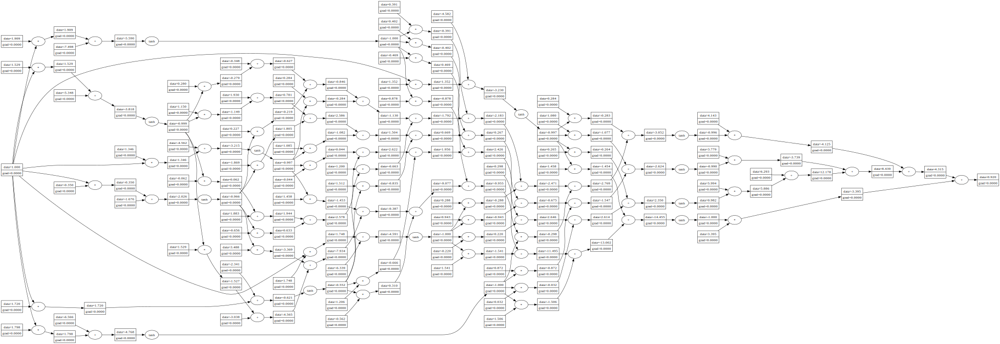

Training from scratch
Our task is to learn the ff. dataset consisting of noisy measurements around a quadratic curve:
%config InlineBackend.figure_format = "svg"
import numpy as np
import matplotlib.pyplot as plt
RANDOM_SEED = 42
np.random.seed(RANDOM_SEED)
N = 1500
X = np.linspace(-1, 5, N)
Y = X ** 2 + 0.5 * np.random.normal(size=N, scale=3)
Helper for loading the samples:
import random
random.seed(RANDOM_SEED)
class DataLoader:
def __init__(self, dataset, batch_size):
"""Iterate over a partition of the dataset."""
self.batch_size = batch_size
self.dataset = [(Node(x), Node(y)) for x, y in dataset]
def load(self):
return random.sample(self.dataset, self.batch_size)
def __len__(self):
return len(self.dataset)
The function optim_step implements one step of SGD. Note that gradients accumulate, so we can implement batch size. But for simplicity, we only consider one training instance per update. Here loss_fn is the MSE between two nodes.
def optim_step(model, lr=1.0):
for p in model.parameters():
p.data -= lr * p.grad
def loss_fn(y_pred, y_true):
return (y_pred - y_true) ** 2
Running the training algorithm:
from tqdm.notebook import tqdm
def train(model, dataset, steps, lr=0.1, batch_size=32):
dataloader = DataLoader(dataset, batch_size)
history = []
for _ in tqdm(range(steps)):
for x, y in dataloader.load():
loss = loss_fn(model([x]), y)
loss.backward()
optim_step(model, lr=lr)
model.zero_grad()
history.append(loss.data)
return history
dataset = list(zip(X, Y))
model = MLP(1, [8, 4, 1], "tanh")
losses = train(model, dataset, lr=0.003, batch_size=8, steps=5000)
Loss curve moving average decreasing:
w = 50
loss_avg = np.array(losses).reshape(-1, w).mean(axis=1)
fig, ax = plt.subplots(1, 1, figsize=(8, 4))
ax.plot(loss_avg, label="train")
ax.grid(linestyle="dotted", alpha=0.6)
ax.set_ylabel("MSE")
ax.set_xlabel("steps")
ax.legend();

Model learned: ヾ( ˃ᴗ˂ )◞ • *✰
Show code cell source
plt.figure(figsize=(6, 4))
plt.scatter(X, Y, label="data", s=2, alpha=0.7, color="black")
plt.plot(X, [model([Node(x)]).data for x in X], label="model", color="C1", linewidth=2)
plt.ylabel("y")
plt.xlabel("x")
plt.grid(linestyle="dotted")
plt.legend();

Model graph visualization:
x = Node(1.0)
pred = model([x])
draw_graph(pred)
